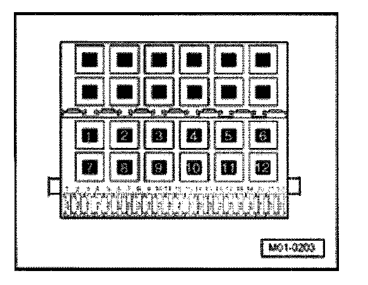

With Generic Scan Tool
READINESS CODE, GENERATING
Requirements

- The respective fuses of the Motronic fuel injection and ignition system must be OK.
- Battery voltage must be at least 11.5 volts.
- All electrical consumers such as, for example, lights and rear window defroster must be switched off.
- If vehicle is equipped with an A/C system, it must be switched off.
- Parking brake must be engaged or else daylight driving lights will be switched on.
- Ground (GND) connections between engine, transmission, and chassis must be OK.
- There must not be any DTCs stored in DTC memory, Diagnostic mode 3: Check DTC memory.
- Intake air temperature 5 to 60° C, Diagnostic mode 1: Check measured values; PID 15: Intake Air Temperature (IAT).
Work procedure
- Connect diagnostic tester.
- Turn ignition on for 30 seconds.
- Start engine and let run at idle.
Check fuel tank ventilation.
Increase engine speed for 90 seconds to 3000 to 3500 RPM to warm up the catalytic converter.
Note:
- Engine speed, Diagnostic mode 1: Check measured values; PID 12, engine rotations per minute.
Testing Secondary Air Injection (AIR) system for proper seal.
- Let engine run at idle for 1 minute.
Testing oxygen sensors for aging.
- Increase engine speed to 2200 to 3300 RPM for 3 minutes.
Testing oxygen sensors in partial throttle range
- Perform a road test.
The following operating conditions must be met during this road test:
- Drive for 15 minutes in 3. gear or in driving mode "3" on a level driving surface at a constant vehicle speed with an engine speed of 2000 to 2800 RPM.
Observe the safety precautions that apply to road tests.
Notes:
- Vehicle speed, Diagnostic mode 1: Check measured values; PID 13, Vehicle speed.
- Engine speed, Diagnostic mode 1: Check measured values; PID 12, engine rotations per minute (RPM).
- Accelerate vehicle uniformly, not at Wide Open Throttle (WOT).
- Avoid coasting operation (throttle valve closed) while driving.
- After 15 minutes, downshift until an engine speed of 2800 to 3500 RPM has been reached.
- Drive in deceleration mode at an engine speed up to approx. 1800 RPM.
- Park vehicle and let engine run at idle for 15 minutes.
- Accelerator pedal must not be operated during this time.
- Read readiness code.
If in 8-digit number block:
- Display position 5: Secondary Air Injection (AIR) system
and/or
- Display position 6: EVAP canister system
a 1 instead of 0 is displayed:
- Repeat complete work procedure.